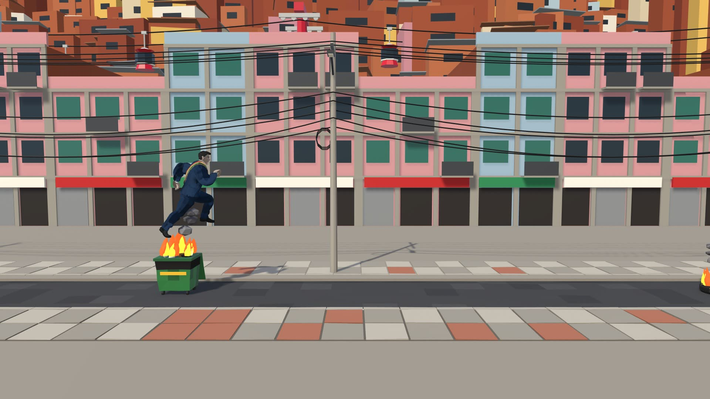
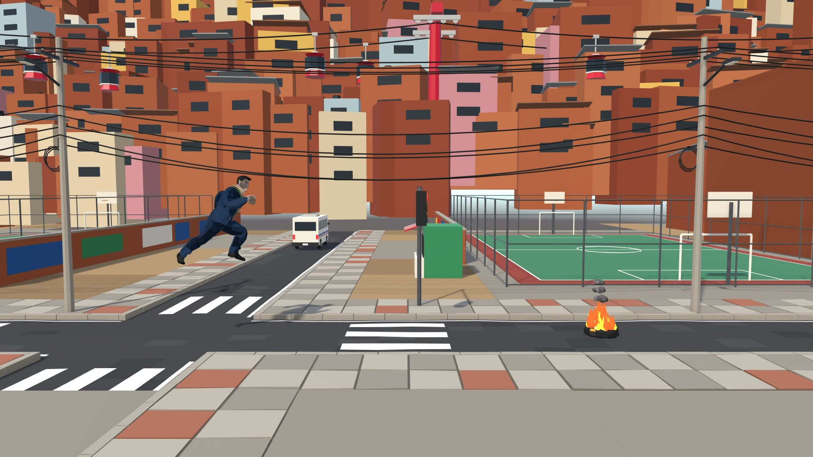
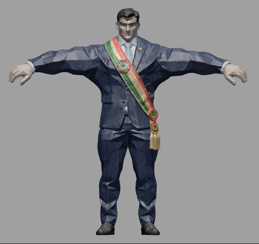

MI
BOLIVIA
Las calles están bloqueadas. La elección no espera.
El Presi corre por las calles de La Paz en plena jornada de protestas: llantas en llamas, carteles, petardos y gas lacrimógeno se cruzan en su camino. Cada segundo que resiste suma votos; llegar a 500 votos antes de perder todas las vidas es la única forma de ganar.

HISTORIA
El mundo
La acción transcurre en una versión estilizada de La Paz, Bolivia: calles empinadas flanqueadas por fachadas de ladrillo y cemento, plazas, cruces con minibuses y trufis, y al fondo los cerros cubiertos de casas que atraviesa el teleférico. La ciudad no se detiene nunca: es un recorrido infinito que se recicla tramo a tramo.
Es día de elecciones y el país vive una jornada de conflicto social. Los bloqueos cortan las vías con llantas y basureros en llamas, los manifestantes levantan carteles de lado a lado de la calle, estallan petardos y la policía responde con gas lacrimógeno.
El conflicto
El Presi necesita llegar a la gente en medio del caos. No puede dar marcha atrás ni esquivar por los costados: solo le queda avanzar, saltando los bloqueos y agachándose ante lo que viene por el aire.
Cada segundo que se mantiene en pie es un mensaje a los votantes: sigue en carrera. Si junta 500 votos, la campaña triunfa y el Presi celebra bailando; si los golpes le quitan todas las vidas, la candidatura termina en plena calle. La historia plantea, con humor y sátira, la idea de que en Bolivia hacer campaña es una carrera de resistencia.

La plaza y el cruce: cada pocos tramos la calle se abre y se ven los carros, el teleférico y el tránsito.
PERSONAJE PRINCIPAL

"EL PRESI"
Modelado por José Gabriel Arroyo Santos
Rol: candidato presidencial y protagonista. Es el único personaje controlable; se mantiene en el centro de la pantalla mientras la ciudad avanza hacia él, al estilo de los runners clásicos de vista lateral.
Rasgos estéticos: modelo 3D animado de estilo low-poly, con traje azul marino, camisa blanca y la banda presidencial tricolor (rojo, amarillo y verde) cruzada al pecho, que contrasta con el ambiente de protesta que lo rodea. Tiene animaciones propias para correr, saltar, deslizarse, recibir golpes por abajo y por arriba, caer derrotado y bailar al ganar.
MECÁNICAS Y CONTROLES
Flecha arriba
Saltar (solo desde el suelo).
Flecha abajo
Agacharse / deslizarse 0.85 s.
Clic en el juego
Da foco al juego para que lea el teclado.
Obstáculos
Llanta en llamas
El bloqueo más común. Quema una vida si la tocas.
Basurero en fuego
Obstáculo bajo y ancho en medio de la calle.
Barrera
Cartel de protesta colocado bajo, de lado a lado.
Cartel alto
La tela queda a la altura de la cabeza.
Petardo
Llega volando más rápido que la calle; a veces explota.
Gas lacrimógeno
No quita vida, pero la cámara gira 3 vueltas en 9 s y te desorienta.
Reglas del sistema
Victoria
Los votos suben solos: 10 por segundo. Al llegar a 500 votos el mundo se detiene y el Presi celebra.
Derrota
Cada choque con un obstáculo resta 1 vida. Con 0 vidas el Presi cae y aparece el panel de derrota.
Dificultad progresiva
La velocidad sube de 10 a 24 m/s. Los obstáculos aéreos aparecen a partir de 120 m y las combinaciones (varios seguidos, saltar + agacharse) desde 250 m.
DATOS DEL PROYECTO
¿Qué tan seguido sale cada obstáculo?
Ficha técnica
- Motor Unity 6 (6000.0) • URP
- Género Endless runner 3D, vista lateral
- Plataforma Navegador web (WebGL)
- Modelado Blender (calles, fachadas, cerros, teleférico, vehículos, obstáculos)
- Mundo Tramos de calle, plazas y cerros reciclados (pooling): no se crea ni destruye nada mientras se juega
- Ambientación Teleférico, minibuses, trufis y autos en movimiento
JUGAR AHORA
Requisitos mínimos
- Computadora de escritorio o laptop con teclado.
- Navegador actualizado: Chrome, Edge, Firefox u Opera (WebGL 2.0).
- 4 GB de RAM y gráficos integrados o superiores.
- Conexión a internet para la primera descarga del juego.
Instrucciones
- Pulsa Cargar el juego y espera a que termine la barra de carga.
- Haz clic dentro del juego para que reciba el teclado.
- Usa ↑ para saltar y ↓ para agacharse.
- Para volver a jugar, recarga la página (F5).
- Si no carga, activa la aceleración por hardware del navegador.